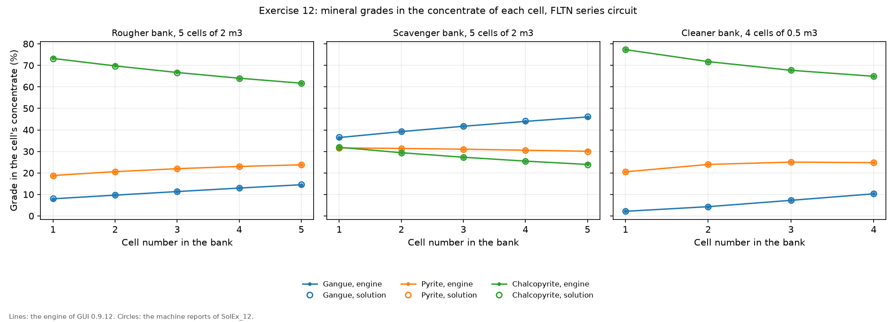
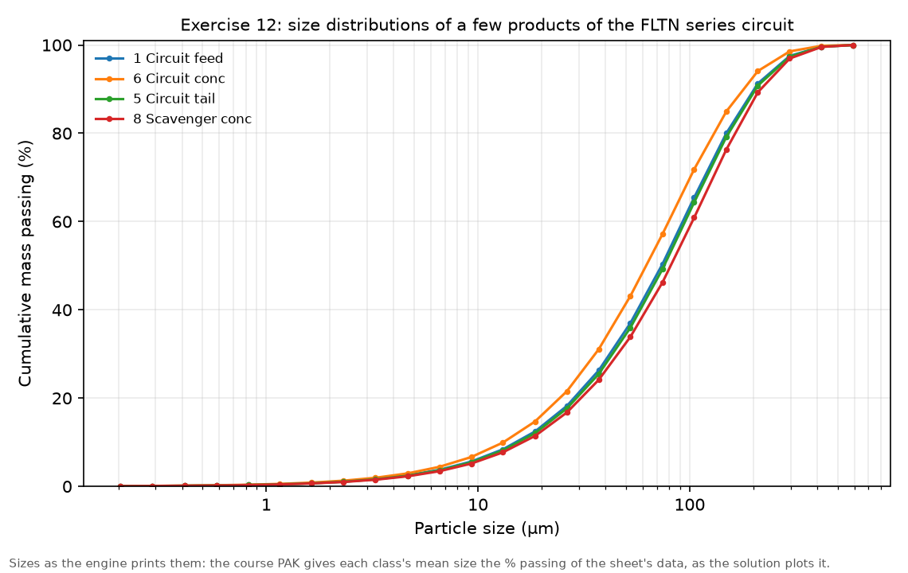

Exercise 12: simple flotation models
module 5 · King 9.2 (kinetic model), 9.3 (distributed rate constants), 9.8 (simplified models)
Read in King: King 9.2 · A kinetic model for flotation · p. 280King 9.3 · Distributed rate constant kinetic model for flotation · p. 295King 9.8 · Simplified kinetic models for flotation · p. 325
The exercise sheet and the worked files live on the PC copy of Malla; the sheet's numbers are transcribed in this guide.
On this page
What they ask
The sheet is Ex_12.pdf (Bertil Pålsson, 2010-11-23, four pages). It compares two simple flotation models. Klimpel's model gives each particle class two numbers, an ultimate recovery and a rate constant ; it ignores particle size, air and the froth, so its parameters change from rougher to scavenger to cleaner and are not true material properties, and the sheet calls it too simple for more than preliminary work, "but anyhow, it has been widely used". The distributed rate constant model defines its rate constants per particle class and also over a third dimension, the S-class, so they can depend on particle size and stay the same for a whole circuit. The sheet writes the two as
2.1 Klimpel's model, a single cell. A mixer and one flotation cell. The feed is a perfectly liberated sulphide ore at 75 t/h and 40 % solids, with one size class and a largest particle of 500 µm:
| Fraction | Mineral | Formula | Density (g/cm³) | % Cu | % Fe |
|---|---|---|---|---|---|
| 0.115 | Chalcopyrite | CuFeS₂ | 4.2 | 34.6 | 30.4 |
| 0.085 | Pyrite | FeS₂ | 5.0 | 46.5 | |
| 0.80 | Gangue | 2.7 |
The cell is 10 m³ with 15 % air, and the concentrate leaves at 55 % solids. Klimpel's parameters:
| Mineral | Ultimate recovery (%) | Rate constant (min⁻¹) |
|---|---|---|
| Gangue | 12 | 0.12 |
| Pyrite | 53 | 0.8 |
| Chalcopyrite | 83 | 2.5 |
(1) The first run should give a concentrate with 19.7 % Cu at 75.6 % recovery, 27.8 % Fe and 20.6 % gangue. (2) What does the cell's report contain? (3) What do the other minerals recover? (4) Double the cell and run again: what happens? (5) Back to 10 m³, but two cells: any difference?
2.2 Klimpel's model, a circuit. Add a scavenger cell of 10 m³ and a cleaner cell of 2 m³, with the streams ending in the open. The rougher concentrate is too thick, so add a wash stream to the rougher's froth launder and lock its concentrate at 40 % solids. The kinetics stay the same in every stage, but the ultimate recoveries differ, because a cleaner treats material that has already floated and a scavenger mostly mixed grains:
| Mineral | Scavenger | Cleaner |
|---|---|---|
| Gangue | 2 % | 15 % |
| Pyrite | 15 % | 80 % |
| Chalcopyrite | 15 % | 90 % |
(1) Run the open circuit and check the reports and the stage recoveries. (2) Send the scavenger concentrate back to the flotation feed: what happens to the rougher? (3) Close the circuit with the cleaner middling as well: is the result reasonable?
2.3 The distributed rate constant model, the circuit. The closed circuit under a new name, with 25 size classes, 3 grade classes and 4 S-classes. The feed follows an RRS distribution with = 100 µm and a spread of 1.2, given at 20 mesh sizes; check that the feed grades still agree with the first table. The S-classes and the share of each mineral in them:
| S-class | K (min⁻¹) | Gangue (G1) | Pyrite (G2) | Chalcopyrite (G3) |
|---|---|---|---|---|
| 1 | 0.0 | 0.88 | 0.47 | 0.17 |
| 2 | 0.12 | 0.12 | 0 | 0 |
| 3 | 0.8 | 0 | 0.53 | 0 |
| 4 | 2.5 | 0 | 0 | 0.83 |
Every stage gets the model FLTN. The sheet adds that, according to King, the most sensitive parameter is the solids holdup, about 300 kg/m³ in rougher and scavenger and about 250 kg/m³ in cleaners, and that SolidsHoldup.xls gives a better estimate. (1) Run: any difference? (2) Give the rougher and the scavenger 5 cells of 2 m³ each and the cleaner 4 cells of 0.5 m³. (3) Run again: what happened? (4) From the reports, note how the minerals change from cell to cell along each bank. (5) Plot the size distributions of a few products. The sheet ends with "Play along!".
How the work flows
The exercise climbs in three steps, and each step starts from the file of the one before. The single cell is run three ways (10 m³, 20 m³, and two cells of 10 m³) to see what the model does with residence time. The circuit is then built around that cell and run three times, adding one recycle each time: open, with the scavenger concentrate returned, and closed. Last, the closed circuit gets a new material and a new model, the distributed rate model, first in single cells and then in banks of cells.
- Fixed for every run: the minerals, their densities and analyses, and the feed of 75 t/h at 40 % solids.
- Chosen once per part: the model (KLIM for 2.1 and 2.2, FLTN for 2.3) and, for 2.3, the material with its size, grade and S-classes.
- Turned: in 2.1 the cell volume and the number of cells; in 2.2 the recycles; in 2.3 the number and size of the cells in each bank.
- Read after each run: the concentrate's tonnage, % Cu and Cu recovery, the other minerals' recoveries, the cells' reports, and in 2.3 the mineral grades cell by cell.
- Compared at the end: the two models on the same closed circuit, and what each says about a bank.
| Run | What you change | What you read | When to stop |
|---|---|---|---|
| Single cell | KLIM, one cell of 10 m³ | 19.7 % Cu at 75.6 %? The report; the other minerals' recoveries | When it gives the sheet's numbers |
| Doubled cell, two cells | The cell volume to 20 m³; then back to 10 m³ with two cells | Recovery and grade against the first run | Two runs |
| Circuit, three ways | Open; scavenger concentrate to the feed; cleaner middling too | Each stage's recovery from its own feed; the rougher's feed | After the closed circuit |
| FLTN, single cells | The new material and FLTN in every stage | Whether it converges | One run: it does not settle |
| FLTN, banks | 5 + 5 cells of 2 m³, 4 cells of 0.5 m³ | The mineral grades cell by cell; the size curves of a few products | When the reports are copied out |
How to check a run
- The feed. 3.98 % Cu and 7.45 % Fe (see Before MODSIM); in 2.3 the sheet asks you to check the feed grades again, because the material is new.
- The first run. The sheet gives the target: 19.7 % Cu at 75.6 % recovery, 27.8 % Fe and 20.6 % gangue. If the recovery is far higher, the cell is probably four cells (the window's default).
- The concentrate's water. 55 % solids from the cell, and 40 % from the rougher once its launder is washed.
- The circuits. Each recycle makes a loop; the run only counts once it has converged, and a negative stream is a sign that it has not.
Why (the engineering)
A rate process. In a flotation cell, particles attach to air bubbles and rise into the froth at a rate proportional to how many are left: the more floatable a particle, the larger its rate constant . Not every particle can float, though. Some are locked in gangue, too coarse, or not hydrophobic enough, and the ultimate recovery is the share that could float given unlimited time. King (section 9.2) builds flotation models on this kinetic view.
Batch test against continuous cell. Klimpel's formula on the sheet describes a batch test: a fixed load of pulp floated for a time , with the rate constants spread evenly between 0 and . A continuous cell is different, because feed enters and tailing leaves all the time, and a cell that is well mixed lets some particles out almost at once and keeps others much longer. For one rate constant, a perfectly mixed cell recovers
where is the mean residence time of the pulp. That is what MODSIM's KLIM bank computes in each cell, as the hand calculation below shows. A bank of cells in series gets closer to a batch test the more cells it has, which is why the number of cells matters so much.
Why Klimpel's parameters change from stage to stage. The model has no size, no air and no froth, so everything that differs between a rougher and a cleaner (the feed's liberation, the froth depth, the wash water) has to hide in and . That is why the sheet gives each stage its own ultimate recoveries.
The distributed rate model spreads the floatability. Instead of one and one per mineral, each mineral is split over S-classes of known rate constant, including a class with = 0 for what never floats (King, section 9.3). Look at the S-class table with Klimpel's table beside it: 0.83 of the chalcopyrite sits in the class of 2.5 min⁻¹, 0.53 of the pyrite in the class of 0.8, and 0.12 of the gangue in the class of 0.12, with the rest in the class that never floats. They are the same numbers: the ultimate recovery became the share in the floating class, and the rate constant became that class's constant. What the distributed model adds is that the rate can also depend on particle size, and that the same constants serve the whole circuit.
The solids holdup. FLTN needs the mass of solids per cubic metre of cell, because that and the volume set how long the solids stay in each cell. The sheet calls it the most sensitive parameter.
Before MODSIM: numbers by hand
The feed. 0.115 × 34.6 = 3.98 % Cu, and 0.115 × 30.4 + 0.085 × 46.5 = 7.45 % Fe.
The residence time of one cell. The cell holds 10 × (1 − 0.15) = 8.5 m³ of pulp. The pulp leaving as tailing is about 103 m³/h of water plus 63.5 t/h of solids, which take up about 23 m³/h, so roughly 126 m³/h in all. A particle therefore stays on average
One perfectly mixed cell. With = 4.05 min each mineral recovers :
- Chalcopyrite: = 2.5 × 4.05 = 10.1, so = 0.83 × 10.1/11.1 = 0.755, or 75.5 %.
- Pyrite: = 0.8 × 4.05 = 3.24, so = 0.53 × 3.24/4.24 = 0.405, or 40.5 %.
- Gangue: = 0.12 × 4.05 = 0.486, so = 0.12 × 0.486/1.486 = 0.039, or 3.9 %.
These are exactly the three recoveries of the cell's report, from one residence time. The sheet's batch formula with the same would give 74.8, 37.3 and 2.5 %, so it is not what the cell computes. From the recoveries, the concentrate carries 0.755 × 8.63 = 6.51 t/h of chalcopyrite, 0.405 × 6.38 = 2.58 t/h of pyrite and 0.0393 × 60 = 2.36 t/h of gangue, 11.45 t/h in all, so its grade is
with 27.8 % Fe and 20.6 % gangue: the sheet's first run, by hand.
Two cells of 10 m³. The second cell treats the 24.5 % of the chalcopyrite that the first one let through, and recovers about 0.755 of that too, so the pair recovers about 0.755 + 0.245 × 0.755 = 94 %. That is more than the ultimate recovery of 83 %, which is only possible because the model applies again in every cell, to that cell's own feed. Physically the ultimate recovery is a property of the ore, so a bank that recovers more than is an artefact of the model, and it is why the sheet's question 5 has such a striking answer.
Step by step in MODSIM
The ready-made projects: not in the Examples folder yet, and why
The PC copy of Malla has this exercise solved on the MODSIM engine in Simulation of Mineral Processing/Examples/Ex12 Simple flotation models/: the three single cells, the three Klimpel circuits, the FLTN cases, the answers to the sheet's questions and two figures. The projects to open in the GUI are not there yet.
- Why. Klimpel's model needs a material with one grade class per mineral, and FLTN adds four S-classes; no project saved by GUI 0.9.12 shows yet how the GUI stores either. Saving KlimpelSingleCell.PAK and DistribRateCircuitClosed.PAK once from the GUI as projects shows both, and then the single cells, the circuits and the FLTN banks join the folder, each checked against the engine's runs.
- Meanwhile. The five course files open in the GUI with everything defined: KlimpelSingleCell, KlimpelCircuitOpen, KlimpelCircuitScavReturn, KlimpelCircuitClosed and DistribRateCircuitClosed.
A mixer and one flotation cell
GUI: File > New project; place Mixer-1 and a Flotation Cell; draw Feed > Mixer-1 > cell, cell concentrate > "Concentrate", cell tailing > "Tailing"Define the ore: three minerals, one grade class each, one size class
Material Definition: Components, Grades, Size_Conv. and Streams as below; Confirm & Finish; saveHow to fill this window
- Components = chalcopyrite 4.2 (34.6 % Cu, 30.4 % Fe), pyrite 5.0 (46.5 % Fe), gangue 2.7
- Grades = three classes, each 100 % of one mineral (the ore is perfectly liberated)
- S-classes = off for now
- Size_Conv. = largest particle size 0.0005 m, 1 size class
- Feed = 75 t/h at 40 % solids, the grade distribution 0.80 gangue, 0.085 pyrite, 0.115 chalcopyrite
The cell: KLIM, one cell of 10 m³, and Klimpel's table
Double-click the cell > Model: KLIM (Klimpel flotation bank), not the default FLTK > fill as in the foldFlotation Cell → KLIM, Klimpel flotation bank: six fields
- Cells in bank (N) = 1 (the default is 4). One cell, as the sheet says; item 5 sets 2.
- Cell volume (V) = 10 m³, the default and the sheet's; item 4 sets 20.
- Air holdup in the cells (ε_air) = 15 %, the default and the sheet's.
- Percent solids in concentrate (%S) = 55 %, the default and the sheet's.
- Banks in parallel (n) = 1.
- Ultimate recovery R (%) and rate constant K (1/min) per G-class: gangue 12 and 0.12, pyrite 53 and 0.8, chalcopyrite 83 and 2.5. The recovery is typed in per cent. In the circuit of part 2.2, the scavenger's rows are 2, 15 and 15 % and the cleaner's 15, 80 and 90 %, each with the same rate constants.
Run the cell three ways
Run; read the concentrate and the report; then cell volume 20 m³, Run; then back to 10 m³ with 2 cells in the bank, RunThe circuit: a scavenger, a cleaner and a washed rougher launder
Add a Flotation Cell of 10 m³ on the rougher tailing (scavenger) and one of 2 m³ on the rougher concentrate (cleaner), both KLIM with 1 cell and their own ultimate recoveries; add a water feed to the rougher's concentrate so that it leaves at 40 % solids; run the open circuitReturn the scavenger concentrate, then the cleaner middling too
Connect the scavenger concentrate back to Mixer-1, run; then the cleaner middling back too, run; save each circuit under its own nameThe distributed rate model: the closed circuit with 25 sizes, 3 grade classes and 4 S-classes
Save As Ex12_FLTN; Material Definition: 25 size classes, S-classes on with the four rate constants, each mineral's share in the S-classes from the sheet's table; the feed as RRS d63.2 100 µm, spread 1.2; every stage's model FLTN, one cell each; RunFlotation Cell → FLTN, flotation bank (Sutherland): six fields
- Cells in series (N) = 1 for item 1, then 5 in the rougher and the scavenger and 4 in the cleaner (item 2).
- Banks in parallel (Np) = 1.
- Cell volume (V) = 10, 10 and 2 m³ for item 1, then 2 m³ in the rougher and the scavenger and 0.5 m³ in the cleaner.
- Solids holdup (ρs): the sheet suggests about 300 kg/m³ in the rougher and the scavenger and 250 kg/m³ in the cleaner, and SolidsHoldup.xls estimates it. The default is 350, and the course file and the solution keep 400, which is why the rougher's report prints an error about the solids holdup.
- Air holdup (εa) = 15 %, the default.
- Flotation rate constants (per S-class) (k) = 0, 0.12, 0.8 and 2.5 min⁻¹, the sheet's S-classes. In the cleaner the solution lowered the gangue's 0.12 to 0.06 to help the circuit converge.
Banks of cells, then the minerals cell by cell and the size curves
Rougher and scavenger 5 cells of 2 m³, cleaner 4 cells of 0.5 m³; Run; copy each bank's report; plot the size curves of the feed, the circuit concentrate, the circuit tailing and the scavenger concentrateExpected results
The engine of GUI 0.9.12 reproduces the suggested solution SolEx_12.pdf in every case that converges. In every pair the engine's number comes first and the solution's second.
The single cell (2.1).
| Case | Concentrate t/h | % Cu | Cu recovery % | Tailing % Cu |
|---|---|---|---|---|
| One cell of 10 m³ | 11.4 / 11.43 | 19.7 / 19.73 | 75.5 / 75.55 | 1.15 / 1.15 |
| One cell of 20 m³ | 13.4 / 13.32 | 17.7 / 17.74 | 79.3 / 79.16 | 1.01 / 1.01 |
| Two cells of 10 m³ | 17 / 16.93 | 16.6 / 16.59 | 94.1 / 94.1 | 0.304 / 0.303 |
- The report (item 2). It gives the number of cells and banks, the cell volume, the air holdup, the % solids of the concentrate, the solids and water fed, each class's ultimate recovery and rate constant, and the water leaving with each product. It prints no grade and no recovery.
- The other minerals (item 3). Of the gangue 3.9 % floats and of the pyrite 40.5 %, against 75.5 % of the chalcopyrite; 56.9 % of all the iron reaches the concentrate.
- Doubled and split (items 4 and 5). Twice the volume adds residence time and lifts the recovery a little, at a lower grade; two cells of the same total volume lift it to 94 %. The solution calls this obvious, although the documentation does not make it clear; Before MODSIM shows where it comes from.
The Klimpel circuits (2.2).
| Circuit | Concentrate t/h | % Cu | Cu recovery % | Rougher feed t/h |
|---|---|---|---|---|
| Open | 7.56 / 7.55 | 25.6 / 25.7 | 64.8 / 64.9 | 75 / 75 |
| Scavenger concentrate returned | 7.88 / 7.85 | 25.4 / 25.5 | 67.1 / 67.01 | 76.1 / 76.1 |
| Closed | 8.75 / 8.72 | 25.5 / 25.6 | 74.7 / 74.62 | 80.5 / 80.4 |
Each recycle buys recovery without costing grade, and the circulating load stays small, so the closed circuit is reasonable. From its own feed the rougher recovers about 75 % of the copper in all three, the scavenger about 14 % of the rougher tailing's, and the cleaner about 86 % of the rougher concentrate's.
The distributed rate model (2.3). In single cells neither engine settles, even at a 10 % tolerance: the solution printed negative middlings and a rougher concentrate at 38.2 % Cu, more copper than pure chalcopyrite holds (34.6 %), and this engine stops with a circuit whose products add up to 78.9 t/h for 75 t/h of feed. In banks the circuit converges and the engine matches the solution within 0.5 % in every flow:
| Stream | t/h | % Cu |
|---|---|---|
| Circuit concentrate | 10.7 / 10.7 | 22.5 / 22.5 |
| Circuit tailing | 64.2 / 64.3 | 0.893 / 0.892 |
| Scavenger concentrate | 2.95 / 2.96 | 8.28 / 8.26 |
| Cleaner middling | 0.576 / 0.579 | 0.315 / 0.322 |
More cells in the rougher and the scavenger give a lower tailing grade than the closed Klimpel circuit (0.89 against 1.14 % Cu), and the cleaner does little work: its middling is only 0.58 t/h.


The solution's overall conclusion: the distributed model says more about each bank, but it may be harder to fit to plant data.
Common mistakes
- Taking the cell's default model. The flotation cell opens with FLTK, the model of Exercise 13; part 2.1 needs KLIM.
- Leaving KLIM's four cells. The window's default bank has four cells, and four cells recover far more than one.
- Checking the cell with the sheet's formula. That formula is Klimpel's batch test; the cell is perfectly mixed, .
- Reading 94 % from two cells as physical. It exceeds the ultimate recovery of 83 % because the model applies in every cell.
- Forgetting the launder water. The rougher concentrate then leaves at 55 % solids instead of 40 %, and the cleaner sees a thicker feed than the sheet's.
- Reading an unconverged circuit. A negative stream or a concentrate richer in copper than chalcopyrite means the loop did not settle.
- The solids holdup at a default. The sheet asks for about 300 and 250 kg/m³; the report complains when the value does not suit the feed.
Sensitivity analysis
- Volume against number of cells. One cell of 20 m³ recovers 79.3 % of the copper; two cells of 10 m³ recover 94.1 %. On this model, splitting a volume into cells is worth far more than enlarging it.
- Recycles. Returning the scavenger concentrate adds 2.3 points of recovery, and closing the cleaner middling another 7.6, with the grade held near 25.5 % Cu.
- The distributed model along a bank. The chalcopyrite in each rougher cell's concentrate falls by about 3 points per cell, from 73.2 to 61.7 %, while the gangue rises from 8.0 to 14.5 %.
Hand-in checklist
Nothing of this exercise is graded, but the sheet asks to show: